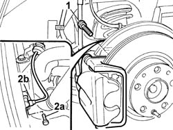
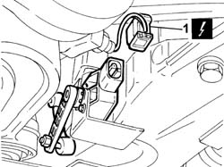
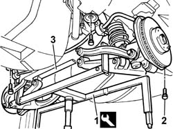
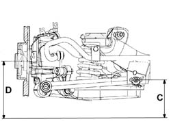

4420D10 REAR SUSPENSION AXLE - R.R.
- Path
- Procedures > 44 SUSPENSION AND WHEELS > 4420 REAR SUSPENSION > 4420D REAR SUSPENSION AXLE/CROSSMEMBER > 4420D10 REAR SUSPENSION AXLE - R.R.
- Kind
- repair procedure (removal / refitting; the operation number is the code)
- Applies to
- all engines; all production periods
- Interactive page
- https://sloeber94.github.io/elrnDB-lThss/en/#/177989
Applies to: all engines; all production periods
 Removing
Removing
 Refitting
Refitting- Position the vehicle on a lift.
See in Op. 7040D50 ENGINE COMPARTMENT UPPER SOUND INSULATION SHIELD - R.R.
See in Op. 7040B10 LOAD CARRYING COMPARTMENT LINING - R.R.
See in Op. 7040B17 Luggage compartment/load platform side trim flap (one) - Replace
See in Op. 7040B13 Luggage compartment/load platform SIDE LINING - R.R.
See in Op. 4450B11 Rear WHEEL (one) - R.R.
See in Op. 7055B43 REAR WHEEL ARCH LINER (one), left or right - R.R.
See in Op. 4440K31 LEFT OR RIGHT REAR INTELLIGENT SUSPENSION SHOCK ABSORBER (ONE) - R.R.
-
1. Undo the bolts fixing the brake back plate to the hub.
2. Undo the fixing bolt (2a) and remove the ABS sensor (2b).

Applies to: all engines; all production periods
- Raise the vehicle.
Applies to: engines: 3.0 V6, 3.2 V6; all production periods
Applies to: engines: 2.4 20V, 2.4 JTD 10V; all production periods
Applies to: engines: 2.0 TB; all production periods
See in Op. 1076B20 Rear exhaust SILENCER - R.R.
-
See in Op. 1076A40 Exhaust pipe HEAT SHIELDS - R.R.
-
Applies to: engines: 2.4 JTD 20V; all production periods
Applies to: all engines; all production periods
1. Disconnect the electrical connection for the headlamp alignment rear potentiometer.
 | Description | Connector |
|---|---|---|
1 | Headlamp alignment corrector rear potentiometer (CAF) | K002 |

Applies to: all engines; all production periods
1. Position the tool for supporting the rear suspension axle.
 | Description | Code | Function |
|---|---|---|---|
1 | Support | 1.860.975.001 | Rear axle (support) |
2. Undo the bolts fixing the rear axle to the bodyshell.
3. Remove the rear axle, complete with springs, anti-roll bar and track control arms.

Applies to: all engines; all production periods
Refitting
Removing- Fit the rear axle, complete with springs, anti-roll bar and track control arms.
- Tighten the bolts fixing the rear axle to the bodyshell.
- Remove the tool positioned previously for supporting the rear suspension axle.
| Description | Code | Function |
|---|---|---|---|
. | Support | 1.860.975.001 | Rear axle (support) |
| Description | Connector |
|---|---|---|
. | Headlamp alignment corrector rear potentiometer (CAF) | K002 |
Applies to: engines: 2.4 JTD 20V; all production periods
Applies to: engines: 2.4 20V, 2.4 JTD 10V; all production periods
Applies to: engines: 3.0 V6, 3.2 V6; all production periods
Applies to: engines: 2.0 TB; all production periods
See in Op. 1076B20 Rear exhaust SILENCER - R.R.
-
See in Op. 1076A40 Exhaust pipe HEAT SHIELDS - R.R.
-
Applies to: all engines; all production periods
- Lower the vehicle.
- Fit the ABS sensor in the special housing in the rear brakes.
- Fit the brake caliper bracket complete with caliper and tighten the fixing bolts.
See in Op. 4440K31 LEFT OR RIGHT REAR INTELLIGENT SUSPENSION SHOCK ABSORBER (ONE) - R.R.
-
See in Op. 7055B43 REAR WHEEL ARCH LINER (one), left or right - R.R.
See in Op. 4450B11 Rear WHEEL (one) - R.R.
See in Op. 7040B13 Luggage compartment/load platform SIDE LINING - R.R.
See in Op. 7040B17 Luggage compartment/load platform side trim flap (one) - Replace
See in Op. 7040B10 LOAD CARRYING COMPARTMENT LINING - R.R.
- Place the vehicle in Standard "A" conditions, in other words with the vehicle mass complete, spare wheel, tool kit, all supplies and accessories (oil, engine coolant, etc.) and a full fuel tank.
- Check that the tyre inflation pressure is correct.
- Position the vehicle on a support so that the wheels are resting on the ground.
Applies to: engines: 2.4 20V; all production periods
- Check that after the vehicle has been placed in standard "A" conditions, the measurement "D"-"C" corresponds to the figure given in the table below.
 | Subject | Value |
|---|---|---|
. | Rear wheel geometry | mm |
- | D - C | 21 ± 5 |
- | Standard A | - |

Applies to: engines: 2.4 JTD 10V; all production periods
- Check that after the vehicle has been placed in standard "A" conditions, the measurement "D"-"C" corresponds to the figure given in the table below.
| Subject | Value |
|---|---|---|
. | Rear wheel geometry | mm |
- | D - C | 21 ± 5 |
- | Standard A | - |
Applies to: engines: 3.0 V6, 3.2 V6; all production periods
- Check that after the vehicle has been placed in standard "A" conditions, the measurement "D"-"C" corresponds to the figure given in the table below.
| Subject | Value |
|---|---|---|
. | Rear wheel geometry | mm |
- | D - C | 21 ± 5 |
- | Standard A | - |
Applies to: engines: 2.0 TB; all production periods
- Check that after the vehicle has been placed in standard "A" conditions, the measurement "D"-"C" corresponds to the figure given in the table below.
| Subject | Value |
|---|---|---|
. | Rear wheel geometry | mm |
- | D - C | 21 ± 5 |
- | Standard A | - |
Applies to: engines: 2.4 JTD 20V; all production periods
- Check that after the vehicle has been placed in standard "A" conditions, the measurement "D"-"C" corresponds to the figure given in the table below.
| Subject | Value |
|---|---|---|
. | Rear wheel geometry | mm |
- | D - C | 21 ± 5 |
- | Standard A | - |
Applies to: all engines; all production periods
- Tighten the bolts fixing the rear axle to the bodyshell to torque.
 | Value - daNm | Fastening | Component | Ø |
|---|---|---|---|---|
. | 2.5 | Bolt | REAR RIGID AXLE | M8 |
| Value - daNm | Fastening | Component | Ø |
|---|---|---|---|---|
. | 10 | Bolt | REAR RIGID AXLE | M12x1.5 |
See in Op. 7040D50 ENGINE COMPARTMENT UPPER SOUND INSULATION SHIELD - R.R.
Topics linked from this page (10)
- 1076A40 Exhaust pipe HEAT SHIELDS - R.R.
- 1076B20 Rear exhaust SILENCER - R.R.
- 4440K31 LEFT OR RIGHT REAR INTELLIGENT SUSPENSION SHOCK ABSORBER (ONE) - R.R.
- 4450A40 REAR WHEEL GEOMETRY - Check using optical equipment - Includes rear wheel toe-in adjustment if necessary
- 4450B11 Rear WHEEL (one) - R.R.
- 7040B10 LOAD CARRYING COMPARTMENT LINING - R.R.
- 7040B13 Luggage compartment/load platform SIDE LINING - R.R.
- 7040B17 Luggage compartment/load platform side trim flap (one) - Replace
- 7040D50 ENGINE COMPARTMENT UPPER SOUND INSULATION SHIELD - R.R.
- 7055B43 REAR WHEEL ARCH LINER (one), left or right - R.R.
Topics that link to this page (9)
- 1040A10 FUEL TANK - R.R. and decant fuel
- 1040A14 FUEL TANK - R.R. for REPLACEMENT
- 1040A10 FUEL TANK - R.R. and decant fuel
- 1040A14 FUEL TANK - R.R. for REPLACEMENT
- 1040A10 FUEL TANK - R.R. and decant fuel
- 1040A14 FUEL TANK - R.R. for REPLACEMENT
- 3340B74 Rigid pipes from connectors to rear brakes - R.R.
- 4420C10 Rear suspension ANTI-ROLL BAR - R.R.
- 4420C80 Rear suspension CAMBER ROD - R.R.